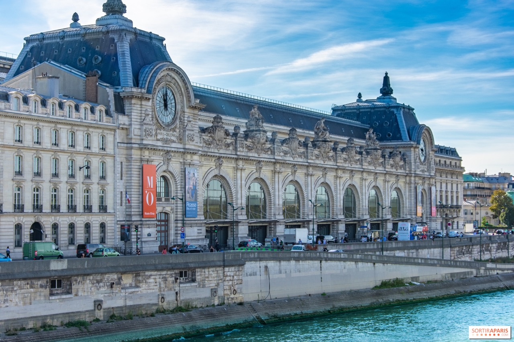

Musée d'Orsay
Linked Open Data Project
Once the grand Gare d'Orsay — a Beaux-Arts railway station built for the 1900 World Fair — transformed into one of the world's great museums, housing stunning Impressionist exhibitions and masterpieces by Monet, Van Gogh, Renoir, Degas, and Cézanne. This project models that transformation through semantic web technologies.
About the Project
What stands today as the Musée d'Orsay began its life in 1898 as the Gare d'Orsay — a monumental railway terminus designed by Victor Laloux on the left bank of the Seine, constructed to serve the 1900 Exposition Universelle.
After decades of disuse and near demolition, the building was listed as a historic monument in 1978. Architect Gae Aulenti masterfully converted its vast interior into a museum space. It opened on 9 December 1986 and today houses one of the world's finest collections of Impressionist and Post-Impressionist art.
This Linked Open Data project models the building's full history using the CIDOC CRM event-based ontology, capturing actors, events, and temporal spans in a machine-readable semantic graph.
Key Facts
- Original functionRailway station (Gare d'Orsay)
- Built1898–1900
- ArchitectVictor Laloux
- Location1 Rue de la Légion d'Honneur, Paris 7e
- Historic Monument1978
- Conversion ArchitectGae Aulenti
- Museum Opening9 December 1986
- Collection FocusArt from 1848 to 1914
- Notable ArtistsMonet, Renoir, Degas, Van Gogh, Cézanne
Project Resources
Access the underlying models that drive this semantic web initiative.
TEI XML
Structured textual encoding of the museum's historical timeline and architectural evolution.
View Source →RDF / Turtle
CIDOC CRM-compliant triples modeling the entities, events, and actors associated with the museum.
View Source →Research Team
The researcher behind the knowledge modeling and ontology design.